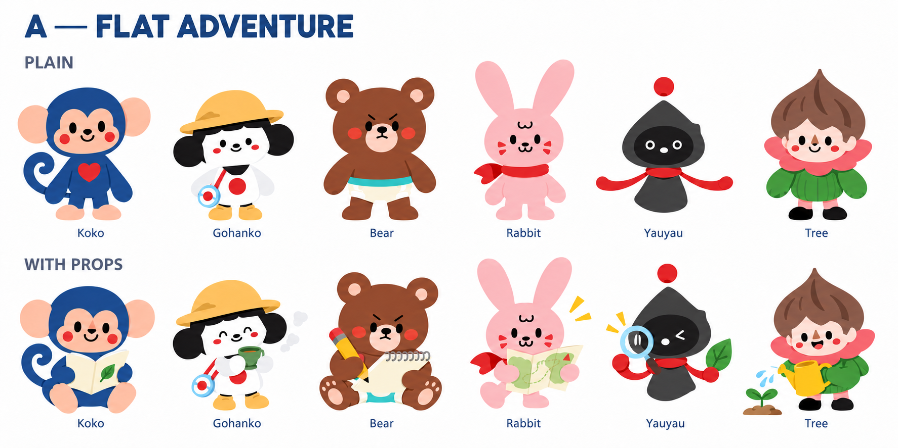
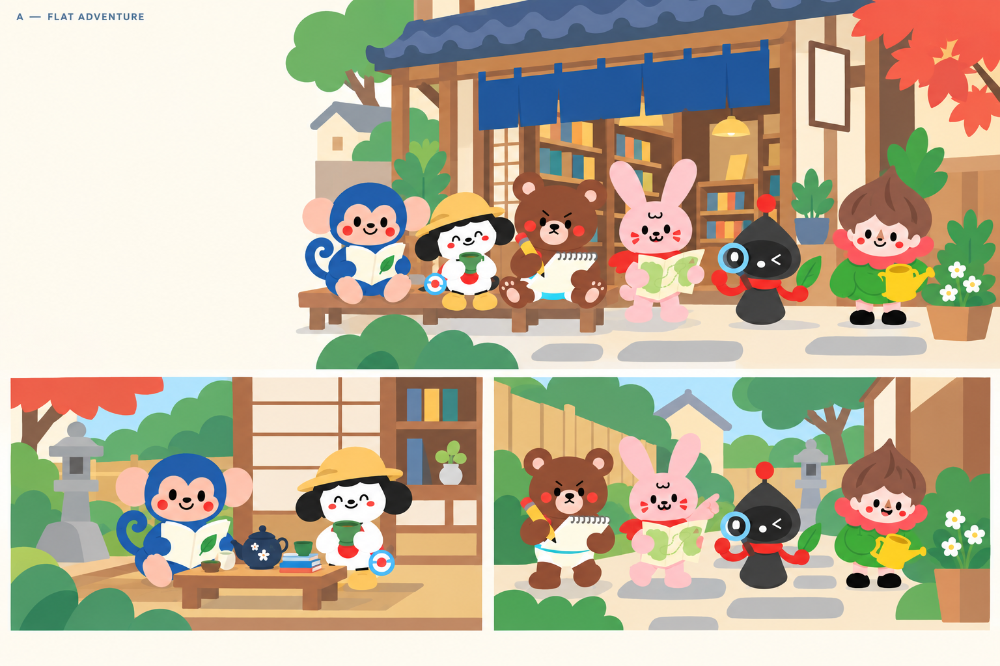
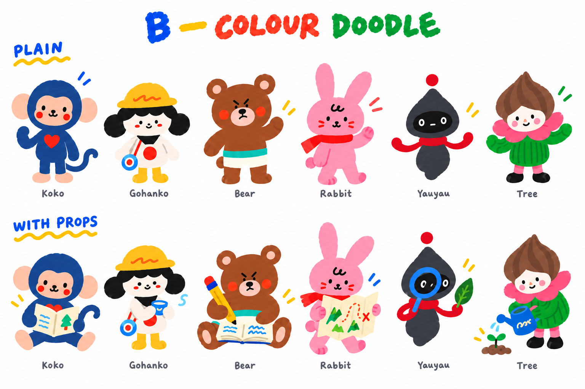
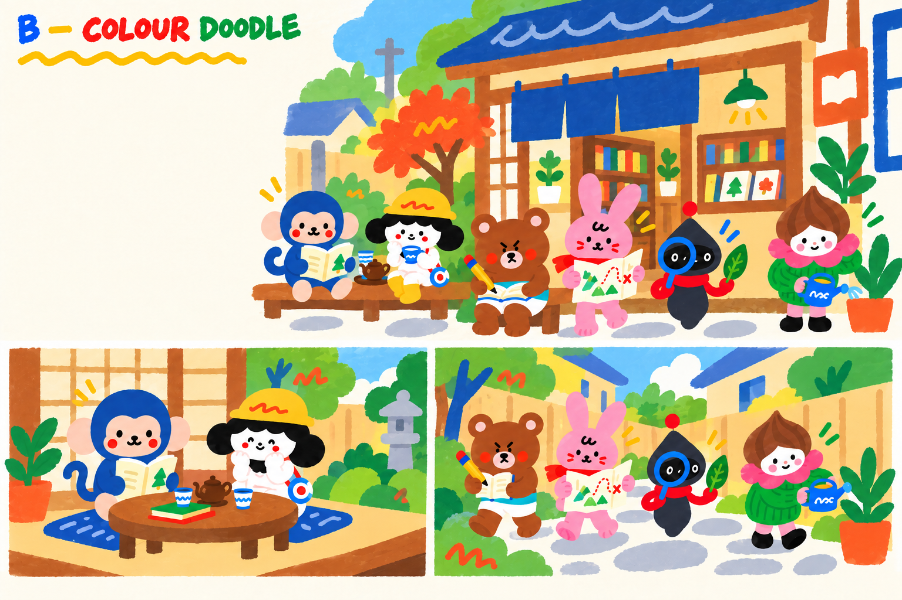
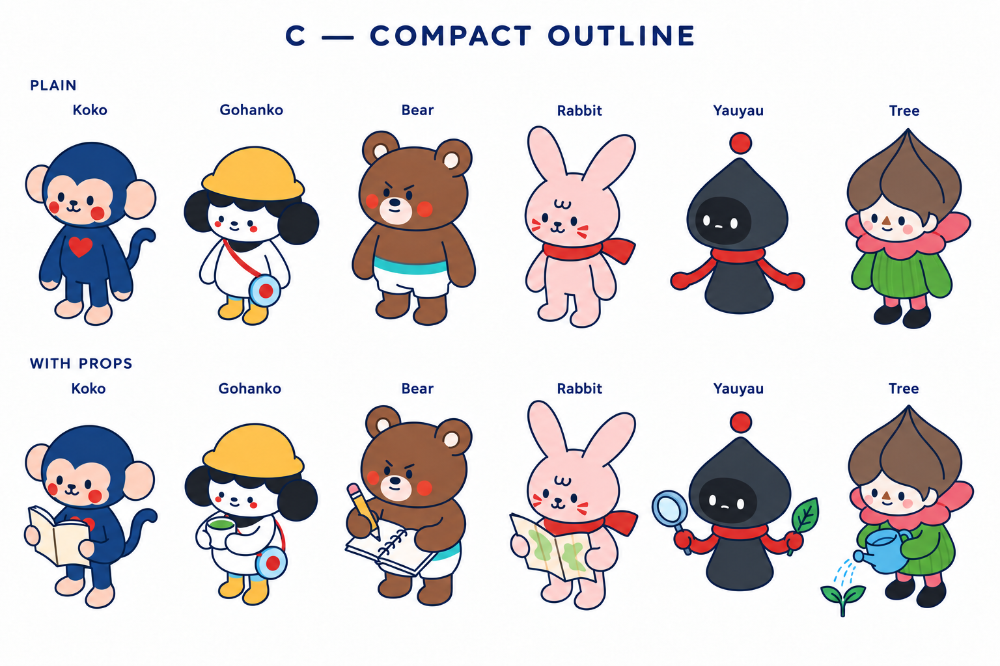
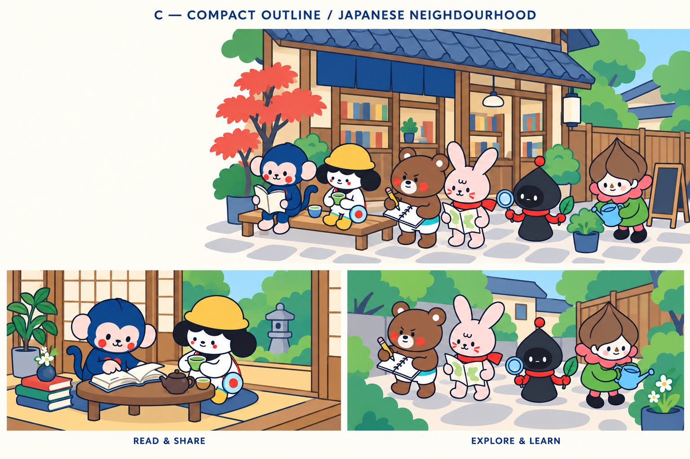
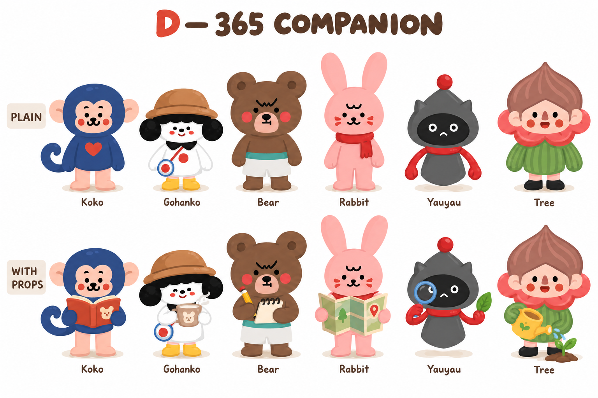
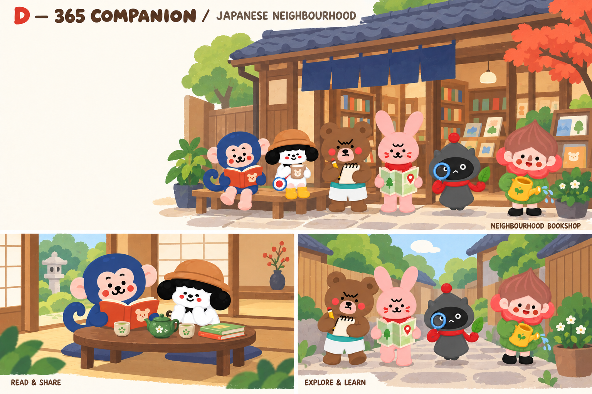

Guidelines · COMPARISON
Each scene board shows a neighbourhood bookshop hero, a reading-and-tea vignette, and a garden exploration vignette. Headline and CTA would be live UI in the reserved hero space.
Guidelines and reference notes from the Kokomonster design library.
Each scene board shows a neighbourhood bookshop hero, a reading-and-tea vignette, and a garden exploration vignette. Headline and CTA would be live UI in the reserved hero space.
Best general landing-page candidate: clear shapes and low visual complexity.


Most playful option; strongest for campaigns and seasonal activity content.


Most structured option; useful for maps, spaces and explainers. Compact anatomy is retained.


Closest to the authored 365 family; useful for narrative learning and cultural stories.


No matching items. Try another search or filter.